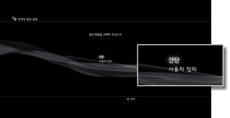
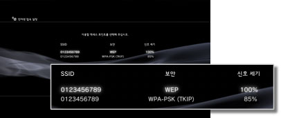
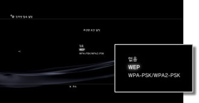
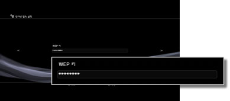

인터넷 접속 설정(무선)
이 설정은 무선랜 기능이 탑재된 PS3™에서만 사용할 수 있습니다.
인터넷에 접속하기 위한 방법을 설정합니다. 인터넷 접속 설정은 사용하시는 네트워크 설정은 네트워크 환경과 사용하시는 기기에 따라 다릅니다. 여기서는 무선으로 인터넷에 접속할 때의 표준적인 설정의 예를 설명합니다.
1. |
액세스 포인트 설정을 마쳤는지 확인합니다. |
|---|---|
2. |
PS3™에 LAN 케이블이 연결되지 않았음을 확인합니다. |
3. |
|
4. |
[인터넷 접속 설정]을 선택합니다. |
5. |
[간단]을 선택합니다.  |
6. |
[무선]을 선택합니다.
|
7. |
[검색]을 선택합니다.
|
8. |
이용하려는 액세스 포인트를 선택합니다.  |
9. |
액세스 포인트의 SSID를 확인합니다. |
10. |
보안 설정을 선택합니다.  |
11. |
암호화 키를 입력합니다.  암호화 키의 입력을 마치고 네트워크 구성을 확인하면 설정 목록이 표시됩니다. |
12. |
설정을 저장합니다. |
13. |
접속 테스트를 합니다. |
14. |
접속 테스트 결과를 확인합니다. |
 (설정)에서
(설정)에서  (네트워크 설정)을 선택합니다.
(네트워크 설정)을 선택합니다.

알아두기
- 접속에 실패하면 화면의 지시에 따라 설정을 확인해 주십시오. 인터넷 서비스 제공자가 제공하는 정보 및 사용하는 네트워크 기기의 사용설명서를 참조해 주십시오.
- 5단계에서 [액세스 포인트별 자동 설정] > [AOSS]를 선택한 경우 즉시 접속 테스트를 하면 공유기쪽의 설정이 완료되지 않아 접속에 실패하는 경우가 있습니다. 접속 테스트는 약 1~2분 정도 후에 해 주십시오.